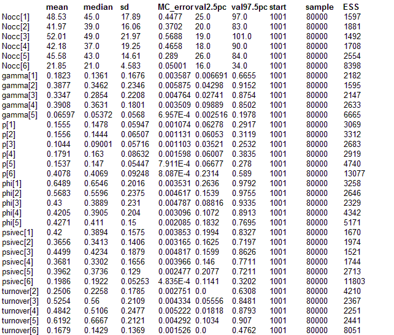

Sparrowhawks: Dynamic site- occupancy, or generalised metapopulation, model for the dynamics of distributions
(Contributed by Marc Kerry)
Modelling the dynamics of species distributions is central to metapopulation ecology, biogeography and other branches of ecology. However, simple analyses that do not account for possible imperfect detection will lead to distorted results; the general distributional extent and patch survival rate will be underestimated and colonisation rates and turnover rates will be overestimated. And worse, the degree of the induced bias may be related to the very factors one wants to study. For instance, most species will have lower abundance at range edges leading to reduced probability to detect them in occupied patches; therefore, increased turnover rates at range edges would be expected as a mere sampling effect. Similar effects will occur in metapopulation studies unless possible imperfect detection is accounted for (Moilanen,
Oikos, 2002).
To model the dynamics of distributions or of metapopulations, i.e., occupancy and patch survival and colonisation rates, free of the biasing effects of imperfect detection, MacKenzie
et al. (
Ecology, 2003; also
Academic Press, 2006) developed a multi-season version of their site-occupancy model (see example "Gentians") that uses spatially and temporally replicated detection/nondetection (a.k.a."presence/absence") data to model occurrence separately from detection. Royle and Kéry,
(Ecology, 2007) developed a hierarchical formulation of the dynamic model that can be easily implemented in WinBUGS. This model describes the dynamic biological process of patch occupancy separately from the observation process.
The data required for this type of modeling consists of the detection/nondetection observations at a number of sites (i) and over a number of years ("seasons", t). Seasons are chosen so that the occupancy state of a site (occupied or not occupied) does not change within, but can only do so between successive seasons. Importantly, to be able to estimate parameters of the biological process separately from those of the observation process, within-season replication of observations is required for at least some sites and some years; it is this replication that contains the information about the observation process, i.e., detection probability. Hence, y
itk denotes the binary detection observation at site i, in season t and for replicate observation k. Important assumptions of the model are within-season "closure" and no false-positive errors, i.e., a species can only be overlooked when absent but not falsely detected where it is not present.
Dynamic site-occupancy models describe the biological process underlying observation y
itk as a function of initial occupancy in the first year (psi
t=1) and an annual probability of patch survival (phi
t) and patch colonisation (gamma
t). Several other parameterisations are available, e.g. in terms of extinction rather than patch survival rate or the autologistic parameterisation (see Royle and Dorazio,
Academic Press, 2008). The autologistic is particularly useful when effects of covariates directly on occupancy need to be modellied, rather than on its dynamic components.
Here is the representation in terms of initial occupancy (z
it) and probabilities of survival (phi) and colonisation (gamma). For clarity, index i (for site) is dropped; however, importantly, all parameters could be made site-specific and modelled as (e.g., logistic) functions of covariates.
State process:
z
t ~ Bernoulli(psi
t=1) Initial occupancy psi, for year j = 1
z
t | z
t -1 ~ Bernoulli(z
t -1 * phi
t -1 + (1 - z
t -1 ) *gamma
t -1 ) Occupancy in later years
Observation process:
y
t ~ Bernoulli( z
t * p
t) Detection conditional on occurrence (z=1)
Hence, occupancy dynamics is modelled as a Bernoulli process with success probability depending on the previous year's occurrence state (z) and survival and colonisation rates: if a site was occupied (z
t -1 =1), the survival component (phi) in the Bernoulli success probability becomes operative, while if it wasn't (z
t -1 =0), the colonisation component (gamma) does.
A number of useful quantities can be obtained as derived parameters such as the actual number of occupied sites in each year (or alternatively, finite-sample occupancy) or turnover and growth rates. Occupancy for years t>1 is also a derived parameter that can be computed from initial occupancy and survival and colonisation rates. The hierarchical representation of the model is easily amenable to introduction of additional complexity, for additional random effects that may be correlated; see Royle and Kéry (2007) for examples.
The analysis presented here uses "presence/absence" data for the European Sparrowhawk (
Accipiter nisus) collected during 2000-2005 in the Swiss national Breeding Bird Survey (MHB) where three (and sometimes only two) replicate surveys are conducted in each of 267 kilometre square quadrats laid out as a grid over the country. Data from a random subset of 116 quadrats are given in two arrays: x contains the binary "detection/nondetection" data at site i during season j and for replicate k. REPS contains the number of replicates at site i and in season j.
model
{ # Generalised metapopulation model or dynamic site-occupancy model
# Priors
for(i in 1 : nyear -1){
phi[i] ~ dunif(0,1) # Patch survival rate (one fewer than number of years)
gamma[i] ~ dunif(0,1) # Patch colonisation rate
# (one fewer than number of years)
p[i]~dunif(0,1) # Detection probability (conditional on occurrence)
}
p[nyear]~dunif(0,1) # Detection in last year
psi~dunif(0,1) # Occupancy in first year (remainder are derived quantitites)
# Model for the parameters describing the observation process:
#detection probability
for(i in 1 : nsite){
for(j in 1 : nyear){
for(k in 1 : REPS[i,j]){
pmat[j, i, k]<- p[j] # Could also add a linear time trend or add
# covariate function
}
}
}
# Initial state and likelihood for year 1
for(i in 1 : nsite){
z[i,1] ~ dbern(psi) # State model for year 1
for(k in 1 : REPS[i,1]){
mu2[1, i, k] <- z[i,1] * pmat[1, i, k]
x[1, i, k] ~ dbern(mu2[1, i, k]) # Observation model for year 1
}
}
# Likelihood for second to final years
for(i in 1 : nsite){ # State model
for(j in 2 : nyear){
R[i, j] <- (1 - z[i ,j -1]) * z[i, j] # "recruits"
mu[i, j ]<- z[i, j -1] * phi[j -1]+ (1 - z[i, j -1]) * gamma[j -1]
z[i, j] ~ dbern(mu[i, j])
for(k in 1 : REPS[i, j]){ # Observation model
mu2[j, i, k] <- z[i, j] * pmat[j, i, k]
x[j, i, k] ~ dbern(mu2[j, i, k])
}
}
}
# Derived quantities: Annual occupancy, finite-sample occupancy,
#growth rate, turnover rate
psivec[1] <- psi # Occupancy rate in year 1
Nocc[1 ]< -sum(z[1 : nsite,1]) # Number occupied sites in year 1
for(t in 2 : nyear){
turnover[t] <- sum(R[1 : nsite, t]) / Nocc[t] # Turnover rate
Nocc[t] <- sum(z[1 : nsite, t]) # Number of occupied sites in years 2 to 6
# Occ. rate in years 2 to 6
psivec[t] <- psivec[t -1] * phi[t -1]+ (1 - psivec[t -1]) * gamma[t - 1]
growthr[t] <- psivec[t] / psivec[t -1] # Growth rate
}
}
Data
list(x= structure(.Data= c(0, 0, 0, 1, 0, 0, 1, 0, 0, 0, 0, 0, 0, 0, 0, 0, 0, 0, 0, 0, 0, NA, NA, NA, 0, 0, 0, 0, 0, 0, 0, 0, 1, 0, 0, 0, 0, 1, 0, 0, 0, 0, 0, 0, 0, 0, 0, 0, 0, 0, 0, 0, 0, 1, 0, 1, 0, 0, 0, 0, 0, 0, 0, 0, 0, NA, 0, 0, 0, 0, 0, 0, 0, 0, 0, 1, 0, 0, 0, 0, 0, 1, 1, 0, 0, 0, 0, 0, 0, 0, 0, 0, 0, 0, 1, 0, 0, 0, 0, 0, 0, 0, 0, 0, 0, 0, 0, 0, 0, 0, 0, 0, 0, 0, 0, 0, NA, 0, 0, 0, 0, 1, 0, 0, 0, 0, 0, 0, 0, 0, 0, 0, 0, 0, 0, 0, 0, 0, 0, 0, 0, 0, 0, 0, 0, 0, 0, 0, 0, 0, 0, 0, 0, 0, 0, 0, 0, 0, 0, 0, 0, 0, 0, 0, NA, 0, 0, 0, 0, 0, 0, 0, 0, 0, 0, 0, 1, 0, 0, 0, 0, 0, 0, 0, 0, 0, 0, 0, 0, 0, 0, 0, 0, 0, 0, 1, 0, 0, 0, 0, 0, 0, 0, NA, 0, 0, 0, 0, 0, 0, 0, 0, 0, 0, 0, 0, 0, 1, 1, 0, 0, 0, 0, 0, 0, 0, 0, 0, 1, 0, 0, 0, 0, 0, 0, 0, 0, 0, 0, 0, 0, 0, 0, 0, 0, 0, 0, 0, 0, 0, 0, NA, 0, 0, 0, 0, 1, 0, 0, 0, 0, 0, 0, 0, 0, 0, 0, 0, 0, 0, 0, 0, 0, 0, 0, NA, 0, 0, 0, 0, 0, 0, 0, 0, 0, 0, 0, 0, 0, 0, 0, 0, 0, 0, 0, 0, 0, 0, 0, 0, 0, 0, 0, 0, 0, NA, 0, 0, 0, 0, 0, 0, 0, 1, 0, 0, 0, NA, 0, 0, 0, 0, 1, 0, 0, 0, 0, 0, 0, NA, 0, 0, 0, 0, 0, 0, 0, 0, 0, 0, 0, 0, 0, 0, 0, 0, 0, 0, 0, 0, 0, 0, 0, 0, 0, 0, 0, NA, NA, NA, 0, 0, 0, 0, 0, 0, 0, 0, 0, 0, 0, 0, 0, 0, 0, 1, 0, 0, 0, 1, 0, 0, 0, 0, 1, 0, 0, 0, 0, 0, 0, 1, 0, 0, 0, 0, 0, 0, 0, 0, 1, 1, 0, 0, 0, 0, 0, 0, 0, 0, 0, NA, NA, NA, 0, 0, 0, 0, 0, 0, 0, 0, 0, 0, 0, 0, 0, 0, 0, 0, 0, 0, 0, 0, 0, 0, 0, 0, 0, 0, 0, 0, 0, 0, 1, 0, 0, 0, 0, 0, 0, 0, 0, 0, 1, 0, 0, 0, 0, 0, 0, 0, 0, 0, NA, 0, 0, 0, 0, 0, 0, 0, 0, 0, 0, 0, 0, 0, 0, 0, 0, 0, 0, 0, 0, 0, 0, 0, 0, 0, 0, 0, 0, 0, 0, 0, 0, 0, 0, 0, 0, 0, 0, 0, 0, 0, 0, 0, 0, 0, 0, 0, NA, 0, 0, 0, 0, 0, 0, 0, 0, 0, 0, 0, 0, 0, 0, 0, 0, 0, 0, 0, 0, 0, 0, 0, 0, 0, 0, 0, 0, 0, 0, 0, 0, 1, 0, 0, 0, 0, 0, NA, 0, 0, 0, 0, 0, 0, 0, 0, 1, 0, 0, 0, 0, 1, 1, 0, 0, 0, 0, 0, 0, 0, 0, 0, 0, 0, 0, 0, 0, 0, 0, 0, 0, 0, 0, 0, 0, 0, 0, 0, 0, 0, 0, 0, 0, 0, 0, NA, 0, 0, 0, 0, 0, 0, 0, 0, 0, 0, 0, 0, 0, 0, 0, 0, 1, 0, 0, 0, 0, 0, 0, NA, 0, 0, 0, 0, 0, 0, 0, 0, 0, 0, 0, 0, 0, 0, 0, 0, 0, 0, 0, 0, 0, 0, 0, 0, 0, 0, 0, 0, 0, NA, 0, 0, 0, 0, 0, 0, 0, 0, 1, 0, 0, NA, 0, 1, 0, 0, 0, 0, 0, 0, 1, 0, 0, NA, 0, 0, 0, 0, 0, 0, 0, 0, 0, 0, 0, 0, 0, 0, 0, 0, 0, 0, 0, 0, 0, 0, 0, 0, 0, 0, 0, NA, NA, NA, 0, 0, 0, 0, 0, 0, 0, 1, 0, 0, 0, 0, 0, 0, 0, 0, 0, 0, 0, 0, 0, 0, 0, 0, 0, 0, 0, 0, 0, 0, 0, 0, 0, 0, 0, 0, 1, 0, 0, 0, 0, 0, 0, 0, 0, 0, 0, 0, 0, 0, 0, 0, 0, NA, 0, 0, 0, 0, 0, 0, 0, 0, 0, 0, 0, 0, 0, 0, 0, 0, 0, 0, 0, 0, 0, 0, 0, 1, 0, 0, 0, 0, 0, 0, 0, 0, 0, 0, 0, 0, 0, 0, 0, 0, 1, 0, 0, 0, 0, 0, 0, 0, 0, 0, NA, 0, 0, 0, 0, 0, 0, 0, 0, 0, 0, 0, 0, 0, 0, 0, 0, 1, 0, 0, 0, 0, 0, 0, 0, 0, 0, 0, 0, 0, 0, 0, 0, 0, 0, 0, 0, 0, 0, 0, 0, 0, 0, 0, 0, 0, 0, 0, NA, 0, 0, 0, 0, 0, 0, 0, 0, 0, 0, 0, 0, 0, 0, 1, 0, 0, 0, 0, 0, 0, 0, 0, 0, 0, 0, 0, 0, 0, 0, 0, 0, 0, 0, 0, 0, 0, 0, NA, 0, 0, 0, 0, 0, 0, 0, 0, 0, 0, 0, 0, 0, 1, 1, 0, 0, 0, 0, 0, 0, 0, 0, 0, 0, 0, 0, 0, 0, 0, 0, 0, 0, 0, 1, 0, 0, 0, 0, 0, 0, 0, 0, 0, 0, 0, 0, NA, 0, 0, 0, 0, 0, 0, 0, 0, 0, 0, 0, 0, 0, 0, 0, 0, 0, 0, 0, 0, 0, 0, 0, NA, 1, 0, 0, 0, 0, 0, NA, NA, NA, 0, 0, 0, 0, 0, 0, 0, 0, 0, 0, 0, 0, 0, 1, 0, NA, NA, NA, 0, 0, NA, 0, 0, 0, 0, 0, 0, 0, 0, 0, 0, 0, NA, 1, 0, 0, 0, 0, 0, 0, 0, 0, 0, 0, NA, 0, 0, 0, 0, 0, 0, 0, 0, 0, 0, 0, 0, 0, 0, 0, 0, 0, 0, 0, 0, 0, 0, 0, 0, 0, 0, 0, 0, 0, 0, NA, NA, NA, 0, 0, 0, 0, 0, 0, 0, 0, 0, 0, 0, 0, 0, 0, 0, 0, 0, 0, 0, 1, 0, 0, 0, 0, 0, 0, 0, 0, 0, 0, 0, 0, 0, 0, 0, 0, 0, 0, 0, 0, 0, 0, 0, 0, 0, 0, 0, 0, 1, 0, NA, 0, 0, 0, 0, 0, 0, 0, 0, 0, 0, 0, 0, 0, 0, 0, 0, 0, 1, 0, 0, 0, 0, 0, 0, 1, 0, 1, 0, 0, 0, 0, 0, 0, 0, 0, 0, 0, 0, 0, 0, 0, 0, 0, 0, 0, 0, 0, 0, 0, 0, NA, NA, NA, NA, 0, 0, 0, 0, 0, 0, 0, 0, 0, 0, 0, 0, 0, 0, 0, 0, 0, 0, 0, 0, 0, 0, 0, 0, 0, 1, 0, 0, 0, 0, 0, 0, 0, 0, 0, 0, 0, 0, 0, 0, 0, 0, 0, 0, NA, 0, 0, 0, 0, 0, 0, 0, 0, 0, 0, 0, 0, 0, 0, 0, 0, 1, 0, 0, 0, 0, 0, 0, 1, 0, 0, 0, 0, 0, 0, 0, 0, 0, 0, 0, 0, 0, 0, NA, 0, 0, 0, 0, 0, 0, 0, 0, 0, 0, 0, 0, 0, 1, 1, 0, 0, 0, 0, 0, 0, 0, 0, 0, 0, 0, 0, 0, 0, 0, 0, 0, 0, 0, 0, 0, 0, 0, 0, 0, 0, 0, 0, 0, 0, 0, 0, NA, 0, 0, 0, 0, 0, 0, 0, 0, 0, 0, 0, 0, 0, 0, 0, 0, 0, 0, 0, 0, 0, 1, 1, NA, 0, 0, 0, 0, 0, 0, 0, 0, 0, 0, 0, 0, 0, 0, 0, 0, 0, 0, 0, 0, 0, 0, 0, 0, 0, 0, 0, 1, 0, NA, 0, 0, 0, 0, 0, 0, 0, 0, 0, 0, 0, NA, 0, 1, 0, 0, 0, 0, 0, 0, 0, 0, 0, NA, 0, 0, 0, 1, 0, 0, 0, 1, 0, 0, 0, 0, 0, 0, 0, 1, 0, 0, 0, 0, 0, 0, 0, 0, 0, 0, 0, 0, 0, 0, 0, 0, 0, 0, 0, 0, 0, 0, 0, 0, 0, 0, 0, 0, 0, 0, 0, 0, 0, 0, 0, 0, 0, 0, 0, 0, 0, 0, 0, 0, 0, 0, 0, 0, 0, 0, 0, 0, 0, 0, 0, 0, 0, 0, 0, 0, 0, 0, 0, 0, 0, 0, 0, NA, 0, 0, 0, 0, 0, 0, 0, 0, 0, 0, 0, 0, 0, 0, 0, 0, 0, 0, 0, 0, 0, 0, 0, 0, 0, 0, 0, 0, 1, 0, 0, 1, 0, 0, 0, 0, 0, 0, 0, 0, 0, 0, 0, 0, 0, 0, 0, 0, 1, 0, NA, 0, 0, 0, 0, 0, 0, 0, 0, 0, 0, 0, 0, 0, 1, 0, 0, 0, 1, 0, 0, 0, 0, 0, 0, 0, 0, 0, 0, 0, 0, 0, 0, 0, 0, 0, 0, 0, 0, 1, 0, 0, 0, 0, 0, 0, 0, 0, NA, 0, 0, 0, 0, 0, 0, 0, 0, 0, 0, 0, 0, 0, 0, 0, 0, 0, 0, 0, 0, 0, 0, 0, 0, 0, 0, 0, 0, 0, 0, 0, 0, 0, 0, 0, 0, 0, 0, NA, 0, 0, 0, 0, 0, 0, 0, 0, 0, 0, 0, 0, 0, 1, 1, 0, 0, 0, 0, 0, 0, 0, 0, 0, 0, 0, 0, 1, 0, 0, 0, 0, 0, 0, 0, 0, 0, 0, 0, 0, 0, 0, 0, 1, 0, 0, 0, NA, 0, 1, 0, 0, 0, 0, 0, 0, 1, 0, 0, 0, 1, 0, 0, 0, 0, 0, 0, 0, 0, 0, 0, NA, 0, 0, 0, 0, 1, 0, 0, 0, 0, 0, 0, 0, 0, 0, 0, 0, 0, 0, 0, 0, 0, 0, 0, 0, 0, 0, 0, NA, NA, NA, 0, 1, 0, 1, 0, 0, 0, 0, 0, 0, 0, NA, 0, 0, 0, 0, 0, 0, 1, 0, 0, 0, 0, NA, 0, 0, 0, 0, 0, 0, 0, 0, 0, 0, 0, 0, 0, 0, 0, 1, 0, 0, 0, 0, 0, 0, 0, 0, 0, 0, 0, 0, 0, 0, 0, 0, 0, 0, 0, 1, 0, 0, 0, 0, 0, 0, 0, 0, 0, 0, 0, 0, 0, 0, 0, 0, 0, 0, 0, 0, 0, 0, 0, 0, 0, 0, 0, 0, 0, 0, 0, 0, 0, 0, 0, 0, 0, 0, 0, 0, 0, 0, 0, 1, 1, 0, 0, NA, 0, 0, 0, 0, 0, 0, 0, 0, 0, 0, 0, 0, 0, 0, 0, 1, 0, 1, 0, 0, 0, 0, 0, 0, 0, 0, 0, 0, 0, 0, 0, 0, 0, 0, 0, 0, 0, 0, 0, 0, 0, 0, 0, 0, 0, 0, 0, 1, 0, 1, NA, 0, 0, 0, 0, 0, 0, 0, 0, 0, 0, 0, 0, 0, 0, 0, 0, 0, 0, 0, 0, 0, 0, 0, 0, 0, 0, 0, 0, 0, 0, 0, 0, 0, 0, 0, 0, 0, 0, 0, 0, 0, 0, 0, 0, 0, 0, 0, NA, 1, 0, 1, 0, 0, 1, 0, 0, 0, 0, 0, 0, 0, 0, 0, 0, 0, 0, 0, 0, 0, 0, 0, 0, 0, 0, 0, 0, 0, 0, 0, 0, 0, 0, 0, 0, 0, 0, NA, 0, 0, 0, 0, 0, 0, 1, 1, 1, 0, 0, 0, 0, 1, 1, 0, 0, 0, 0, 0, 1, 0, 0, 0, 0, 0, 0, 0, 0, 0, 0, 0, 0, 0, 0, 0, 0, 0, 0, 0, 0, 0, 0, 0, 0, 0, 0, NA, 0, 0, 0, 0, 0, 0, 0, 1, 0, 0, 0, 0, 0, 0, 0, 0, 0, 0, 0, 0, 0, 0, 0, NA, 0, 0, 0, 0, 1, 0, 0, 0, 0, 0, 1, 0, 0, 0, 0, 0, 0, 0, 0, 0, 0, 0, 0, 0, 0, 0, 0, 0, 0, NA, 0, 0, 0, 1, 1, 0, 0, 0, 0, 0, 0, NA, 0, 0, 0, 0, 0, 0, 0, 1, 1, 0, 0, NA, 0, 0, 0, 0, 0, 0, 0, 0, 0, 0, 0, 0, 0, 0, 0, 1, 1, 0), .Dim=c(6, 116, 3)), REPS= structure(.Data= c(3, 3, 3, 3, 3, 3, 3, 3, 3, 3, 3, 3, 3, 3, 3, 3, 3, 3, 3, 1, 1, 3, 3, 3, 3, 3, 3, 1, 3, 3, 3, 3, 3, 3, 3, 3, 3, 3, 3, 3, 3, 3, 1, 3, 3, 3, 3, 3, 3, 3, 3, 3, 3, 3, 3, 3, 3, 3, 3, 3, 3, 3, 3, 3, 3, 3, 3, 3, 3, 3, 3, 3, 3, 3, 3, 3, 3, 3, 3, 3, 3, 3, 3, 3, 3, 3, 3, 3, 3, 3, 3, 3, 3, 3, 3, 3, 3, 3, 3, 3, 3, 3, 3, 3, 3, 3, 3, 3, 3, 3, 3, 3, 3, 3, 3, 3, 3, 3, 3, 3, 3, 3, 3, 3, 3, 3, 2, 1, 2, 2, 2, 2, 3, 3, 3, 3, 3, 3, 3, 3, 3, 3, 3, 3, 3, 3, 3, 3, 3, 3, 3, 3, 3, 3, 3, 3, 3, 3, 3, 3, 3, 3, 3, 3, 3, 3, 3, 3, 3, 3, 3, 3, 3, 3, 3, 3, 3, 3, 3, 3, 3, 3, 3, 3, 3, 3, 3, 3, 3, 3, 3, 3, 3, 3, 3, 3, 3, 3, 3, 3, 3, 3, 3, 3, 3, 3, 3, 3, 3, 3, 3, 3, 3, 3, 3, 3, 3, 3, 3, 3, 3, 3, 3, 3, 3, 3, 3, 3, 2, 2, 2, 2, 2, 2, 3, 3, 3, 1, 3, 3, 3, 3, 3, 3, 3, 3, 3, 3, 3, 3, 3, 3, 3, 3, 3, 3, 3, 3, 3, 3, 3, 3, 3, 3, 3, 3, 3, 3, 3, 3, 3, 3, 3, 3, 3, 3, 3, 3, 3, 3, 3, 3, 3, 3, 3, 3, 3, 3, 3, 3, 3, 3, 3, 3, 3, 3, 3, 3, 3, 3, 3, 3, 3, 3, 3, 3, 3, 3, 3, 3, 3, 3, 3, 3, 3, 3, 3, 3, 3, 3, 3, 3, 3, 3, 2, 2, 2, 2, 2, 2, 3, 3, 3, 3, 3, 3, 3, 3, 3, 3, 3, 3, 3, 3, 3, 3, 3, 3, 3, 3, 3, 3, 3, 3, 3, 3, 3, 3, 3, 3, 3, 3, 3, 3, 3, 3, 3, 3, 3, 3, 3, 3, 3, 3, 3, 3, 3, 3, 3, 3, 3, 3, 3, 3, 3, 3, 3, 3, 3, 3, 3, 3, 3, 3, 3, 3, 3, 3, 3, 3, 3, 3, 2, 2, 2, 2, 2, 2, 3, 3, 3, 3, 3, 3, 3, 3, 3, 3, 3, 3, 3, 3, 3, 3, 3, 3, 3, 3, 3, 3, 3, 3, 3, 3, 3, 3, 3, 3, 3, 3, 3, 3, 3, 3, 3, 3, 3, 3, 3, 3, 3, 3, 3, 3, 3, 3, 3, 3, 3, 3, 3, 3, 3, 3, 3, 3, 3, 3, 3, 3, 3, 3, 3, 3, 3, 3, 3, 3, 3, 3, 3, 3, 3, 3, 3, 3, 3, 3, 3, 3, 3, 3, 3, 3, 3, 3, 3, 3, 2, 2, 2, 2, 2, 2, 3, 3, 3, 3, 3, 3, 3, 3, 3, 3, 3, 3, 3, 3, 3, 3, 3, 3, 3, 3, 3, 3, 3, 3, 3, 3, 3, 3, 3, 3, 3, 3, 3, 3, 3, 3, 3, 3, 3, 3, 3, 3, 2, 2, 2, 2, 2, 2, 3, 3, 3, 3, 3, 3, 3, 3, 3, 3, 3, 3, 3, 3, 1, 3, 3, 3, 3, 3, 3, 3, 3, 3, 3, 3, 3, 3, 3, 3, 3, 3, 3, 3, 3, 3, 3, 3, 3, 3, 3, 3, 3, 3, 3, 3, 3, 3, 3, 3, 1, 3, 3, 3, 2, 2, 2, 2, 1, 2, 3, 3, 3, 3, 3, 3, 3, 3, 3, 3, 3, 3, 3, 3, 3, 3, 3, 3, 2, 2, 2, 2, 2, 2, 3, 3, 3, 3, 3, 3, 3, 3, 3, 3, 3, 3, 3, 3, 3, 3, 3, 3, 2, 2, 2, 2, 2, 2, 3, 3, 3, 3, 3, 3, 3, 3, 3, 3, 3, 3, 3, 3, 3, 3, 3, 3, 3, 3, 3, 3, 3, 3, 3, 3, 3, 3, 3, 3, 3, 3, 3, 3, 3, 3), .Dim=c(116, 6)), nyear=6, nsite=116)
Inits for chain 1
list(z= structure(.Data= c(1, 1, 1, 1, 1, 1, 1, 1, 1, 1, 1, 1, 1, 1, 1, 1, 1, 1, 1, 1, 1, 1, 1, 1, 1, 1, 1, 1, 1, 1, 1, 1, 1, 1, 1, 1, 1, 1, 1, 1, 1, 1, 1, 1, 1, 1, 1, 1, 1, 1, 1, 1, 1, 1, 1, 1, 1, 1, 1, 1, 1, 1, 1, 1, 1, 1, 1, 1, 1, 1, 1, 1, 1, 1, 1, 1, 1, 1, 1, 1, 1, 1, 1, 1, 1, 1, 1, 1, 1, 1, 1, 1, 1, 1, 1, 1, 1, 1, 1, 1, 1, 1, 1, 1, 1, 1, 1, 1, 1, 1, 1, 1, 1, 1, 1, 1, 1, 1, 1, 1, 1, 1, 1, 1, 1, 1, 1, 1, 1, 1, 1, 1, 1, 1, 1, 1, 1, 1, 1, 1, 1, 1, 1, 1, 1, 1, 1, 1, 1, 1, 1, 1, 1, 1, 1, 1, 1, 1, 1, 1, 1, 1, 1, 1, 1, 1, 1, 1, 1, 1, 1, 1, 1, 1, 1, 1, 1, 1, 1, 1, 1, 1, 1, 1, 1, 1, 1, 1, 1, 1, 1, 1, 1, 1, 1, 1, 1, 1, 1, 1, 1, 1, 1, 1, 1, 1, 1, 1, 1, 1, 1, 1, 1, 1, 1, 1, 1, 1, 1, 1, 1, 1, 1, 1, 1, 1, 1, 1, 1, 1, 1, 1, 1, 1, 1, 1, 1, 1, 1, 1, 1, 1, 1, 1, 1, 1, 1, 1, 1, 1, 1, 1, 1, 1, 1, 1, 1, 1, 1, 1, 1, 1, 1, 1, 1, 1, 1, 1, 1, 1, 1, 1, 1, 1, 1, 1, 1, 1, 1, 1, 1, 1, 1, 1, 1, 1, 1, 1, 1, 1, 1, 1, 1, 1, 1, 1, 1, 1, 1, 1, 1, 1, 1, 1, 1, 1, 1, 1, 1, 1, 1, 1, 1, 1, 1, 1, 1, 1, 1, 1, 1, 1, 1, 1, 1, 1, 1, 1, 1, 1, 1, 1, 1, 1, 1, 1, 1, 1, 1, 1, 1, 1, 1, 1, 1, 1, 1, 1, 1, 1, 1, 1, 1, 1, 1, 1, 1, 1, 1, 1, 1, 1, 1, 1, 1, 1, 1, 1, 1, 1, 1, 1, 1, 1, 1, 1, 1, 1, 1, 1, 1, 1, 1, 1, 1, 1, 1, 1, 1, 1, 1, 1, 1, 1, 1, 1, 1, 1, 1, 1, 1, 1, 1, 1, 1, 1, 1, 1, 1, 1, 1, 1, 1, 1, 1, 1, 1, 1, 1, 1, 1, 1, 1, 1, 1, 1, 1, 1, 1, 1, 1, 1, 1, 1, 1, 1, 1, 1, 1, 1, 1, 1, 1, 1, 1, 1, 1, 1, 1, 1, 1, 1, 1, 1, 1, 1, 1, 1, 1, 1, 1, 1, 1, 1, 1, 1, 1, 1, 1, 1, 1, 1, 1, 1, 1, 1, 1, 1, 1, 1, 1, 1, 1, 1, 1, 1, 1, 1, 1, 1, 1, 1, 1, 1, 1, 1, 1, 1, 1, 1, 1, 1, 1, 1, 1, 1, 1, 1, 1, 1, 1, 1, 1, 1, 1, 1, 1, 1, 1, 1, 1, 1, 1, 1, 1, 1, 1, 1, 1, 1, 1, 1, 1, 1, 1, 1, 1, 1, 1, 1, 1, 1, 1, 1, 1, 1, 1, 1, 1, 1, 1, 1, 1, 1, 1, 1, 1, 1, 1, 1, 1, 1, 1, 1, 1, 1, 1, 1, 1, 1, 1, 1, 1, 1, 1, 1, 1, 1, 1, 1, 1, 1, 1, 1, 1, 1, 1, 1, 1, 1, 1, 1, 1, 1, 1, 1, 1, 1, 1, 1, 1, 1, 1, 1, 1, 1, 1, 1, 1, 1, 1, 1, 1, 1, 1, 1, 1, 1, 1, 1, 1, 1, 1, 1, 1, 1, 1, 1, 1, 1, 1, 1, 1, 1, 1, 1, 1, 1, 1, 1, 1, 1, 1, 1, 1, 1, 1, 1, 1, 1, 1, 1, 1, 1, 1, 1, 1, 1, 1, 1, 1, 1, 1, 1, 1, 1, 1, 1, 1, 1, 1, 1, 1, 1, 1, 1, 1, 1, 1, 1, 1, 1, 1, 1, 1, 1, 1, 1, 1, 1, 1, 1, 1, 1, 1, 1), .Dim=c(116, 6)))
Inits for chain 2
list(
z = structure(.Data = c(
1.0, 1.0, 0.0, 0.0, 1.0, 1.0,
0.0, 0.0, 0.0, 0.0, 1.0, 1.0,
1.0, 0.0, 0.0, 1.0, 0.0, 0.0,
0.0, 0.0, 0.0, 0.0, 0.0, 0.0,
1.0, 0.0, 0.0, 0.0, 0.0, 1.0,
1.0, 1.0, 0.0, 1.0, 0.0, 0.0,
0.0, 1.0, 1.0, 0.0, 0.0, 0.0,
0.0, 1.0, 0.0, 1.0, 1.0, 1.0,
1.0, 0.0, 0.0, 0.0, 1.0, 0.0,
1.0, 0.0, 0.0, 0.0, 1.0, 0.0,
1.0, 0.0, 1.0, 1.0, 1.0, 1.0,
1.0, 1.0, 0.0, 0.0, 1.0, 1.0,
1.0, 1.0, 0.0, 0.0, 0.0, 1.0,
0.0, 0.0, 1.0, 1.0, 1.0, 1.0,
0.0, 0.0, 0.0, 1.0, 0.0, 0.0,
0.0, 1.0, 1.0, 0.0, 0.0, 0.0,
1.0, 0.0, 1.0, 1.0, 0.0, 0.0,
1.0, 0.0, 1.0, 0.0, 1.0, 1.0,
0.0, 0.0, 1.0, 0.0, 0.0, 1.0,
1.0, 1.0, 0.0, 1.0, 1.0, 0.0,
0.0, 0.0, 0.0, 0.0, 0.0, 1.0,
1.0, 1.0, 0.0, 1.0, 1.0, 1.0,
0.0, 1.0, 1.0, 0.0, 1.0, 1.0,
0.0, 0.0, 1.0, 0.0, 0.0, 0.0,
0.0, 0.0, 0.0, 1.0, 1.0, 1.0,
1.0, 1.0, 1.0, 1.0, 1.0, 1.0,
0.0, 0.0, 0.0, 0.0, 1.0, 1.0,
1.0, 1.0, 1.0, 0.0, 1.0, 0.0,
1.0, 1.0, 1.0, 0.0, 1.0, 0.0,
1.0, 0.0, 0.0, 0.0, 0.0, 1.0,
0.0, 0.0, 0.0, 0.0, 0.0, 1.0,
1.0, 1.0, 1.0, 1.0, 1.0, 0.0,
1.0, 1.0, 0.0, 0.0, 0.0, 1.0,
0.0, 0.0, 1.0, 1.0, 0.0, 1.0,
1.0, 0.0, 1.0, 0.0, 1.0, 1.0,
0.0, 0.0, 0.0, 1.0, 1.0, 1.0,
0.0, 1.0, 1.0, 0.0, 0.0, 1.0,
1.0, 0.0, 1.0, 0.0, 0.0, 1.0,
0.0, 0.0, 0.0, 0.0, 0.0, 1.0,
0.0, 0.0, 0.0, 0.0, 1.0, 1.0,
1.0, 0.0, 0.0, 0.0, 1.0, 1.0,
1.0, 1.0, 1.0, 1.0, 1.0, 1.0,
0.0, 1.0, 1.0, 1.0, 0.0, 0.0,
1.0, 1.0, 0.0, 0.0, 0.0, 0.0,
1.0, 1.0, 1.0, 0.0, 1.0, 1.0,
0.0, 1.0, 0.0, 0.0, 1.0, 1.0,
1.0, 1.0, 0.0, 0.0, 0.0, 0.0,
1.0, 0.0, 1.0, 0.0, 1.0, 1.0,
1.0, 1.0, 1.0, 1.0, 1.0, 1.0,
0.0, 1.0, 0.0, 0.0, 0.0, 1.0,
0.0, 0.0, 0.0, 1.0, 0.0, 0.0,
0.0, 0.0, 1.0, 0.0, 1.0, 0.0,
1.0, 1.0, 1.0, 1.0, 0.0, 0.0,
0.0, 1.0, 0.0, 0.0, 0.0, 0.0,
1.0, 0.0, 0.0, 1.0, 1.0, 1.0,
0.0, 1.0, 1.0, 1.0, 1.0, 0.0,
0.0, 0.0, 1.0, 0.0, 0.0, 0.0,
1.0, 1.0, 0.0, 0.0, 1.0, 0.0,
0.0, 1.0, 0.0, 1.0, 1.0, 1.0,
0.0, 0.0, 1.0, 0.0, 1.0, 0.0,
0.0, 1.0, 0.0, 0.0, 1.0, 0.0,
1.0, 0.0, 0.0, 1.0, 0.0, 1.0,
0.0, 1.0, 0.0, 0.0, 1.0, 0.0,
0.0, 0.0, 0.0, 1.0, 0.0, 0.0,
1.0, 1.0, 0.0, 0.0, 1.0, 1.0,
0.0, 1.0, 0.0, 1.0, 0.0, 1.0,
1.0, 0.0, 0.0, 1.0, 1.0, 0.0,
0.0, 1.0, 0.0, 0.0, 0.0, 0.0,
0.0, 1.0, 1.0, 0.0, 1.0, 1.0,
1.0, 0.0, 1.0, 1.0, 0.0, 0.0,
1.0, 1.0, 0.0, 1.0, 1.0, 0.0,
0.0, 0.0, 1.0, 1.0, 0.0, 1.0,
1.0, 1.0, 0.0, 1.0, 0.0, 1.0,
1.0, 0.0, 1.0, 1.0, 1.0, 0.0,
1.0, 1.0, 0.0, 1.0, 1.0, 0.0,
1.0, 0.0, 1.0, 1.0, 0.0, 0.0,
1.0, 1.0, 0.0, 0.0, 0.0, 0.0,
0.0, 1.0, 0.0, 1.0, 1.0, 0.0,
1.0, 1.0, 0.0, 1.0, 1.0, 0.0,
1.0, 1.0, 0.0, 0.0, 0.0, 1.0,
0.0, 0.0, 1.0, 0.0, 1.0, 0.0,
0.0, 1.0, 0.0, 0.0, 1.0, 0.0,
1.0, 0.0, 1.0, 0.0, 0.0, 1.0,
0.0, 1.0, 1.0, 0.0, 1.0, 0.0,
1.0, 1.0, 1.0, 1.0, 1.0, 0.0,
1.0, 0.0, 1.0, 1.0, 1.0, 0.0,
1.0, 0.0, 0.0, 0.0, 1.0, 1.0,
1.0, 1.0, 0.0, 1.0, 1.0, 0.0,
0.0, 0.0, 0.0, 0.0, 0.0, 1.0,
0.0, 1.0, 1.0, 0.0, 0.0, 1.0,
0.0, 0.0, 1.0, 0.0, 0.0, 1.0,
1.0, 1.0, 1.0, 1.0, 0.0, 0.0,
0.0, 1.0, 1.0, 0.0, 1.0, 0.0,
0.0, 1.0, 1.0, 1.0, 1.0, 0.0,
0.0, 0.0, 1.0, 0.0, 0.0, 0.0,
1.0, 1.0, 1.0, 1.0, 0.0, 1.0,
1.0, 0.0, 1.0, 1.0, 0.0, 0.0,
0.0, 1.0, 0.0, 0.0, 0.0, 0.0,
0.0, 0.0, 1.0, 0.0, 1.0, 0.0,
0.0, 1.0, 1.0, 1.0, 1.0, 1.0,
1.0, 0.0, 0.0, 1.0, 1.0, 0.0,
1.0, 1.0, 1.0, 0.0, 1.0, 0.0,
0.0, 0.0, 0.0, 1.0, 1.0, 1.0,
1.0, 1.0, 0.0, 0.0, 0.0, 0.0,
0.0, 1.0, 1.0, 1.0, 1.0, 0.0,
0.0, 0.0, 1.0, 0.0, 0.0, 0.0,
0.0, 0.0, 1.0, 0.0, 0.0, 0.0,
0.0, 1.0, 0.0, 0.0, 0.0, 0.0,
0.0, 0.0, 1.0, 1.0, 0.0, 0.0,
0.0, 1.0, 0.0, 0.0, 1.0, 0.0,
0.0, 0.0, 1.0, 0.0, 0.0, 1.0,
0.0, 1.0, 1.0, 1.0, 1.0, 0.0,
0.0, 1.0, 0.0, 0.0, 0.0, 0.0,
1.0, 0.0, 1.0, 0.0, 0.0, 0.0,
0.0, 0.0, 1.0, 0.0, 0.0, 1.0,
0.0, 1.0, 0.0, 0.0, 0.0, 0.0),
.Dim = c(116,6)))
Results

Note that normally, detection probability of Swiss Sparrowhawks was only around 15%, so a naive metapopulation model that assumes perfect detection would yield greatly biased inference. Something seemed to have happened in 2005 (see, e.g., Nocc[6]), but we don't know what.